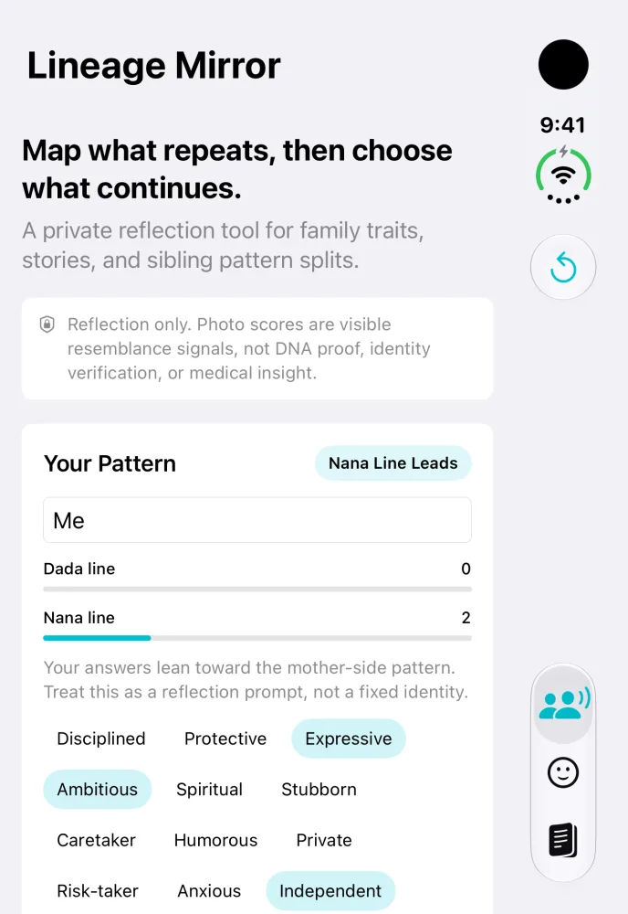
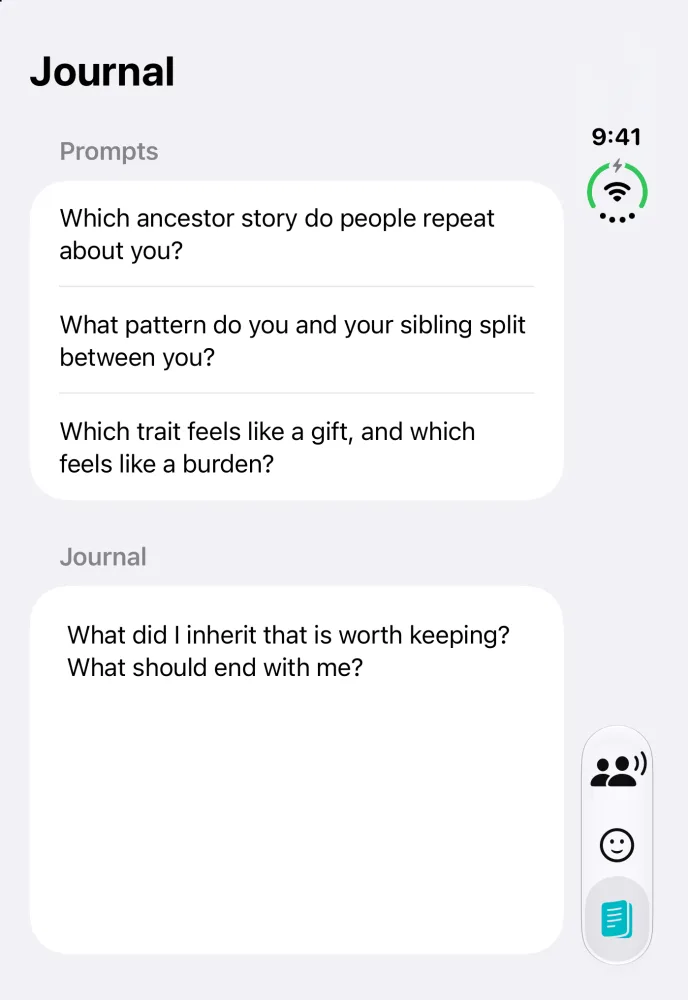

Lineage Mirror
iOS · v1.0.0 · First commit 29 May 2026 · 5 commits
A private reflection app for exploring family stories, inherited traits, and visible resemblance cues.
Screens: the Mirror and Journal tabs, from the current source on the iPhone Duo simulator, 25 October 2026. The app says it is for reflection and is not DNA proof.
View on the App Store
